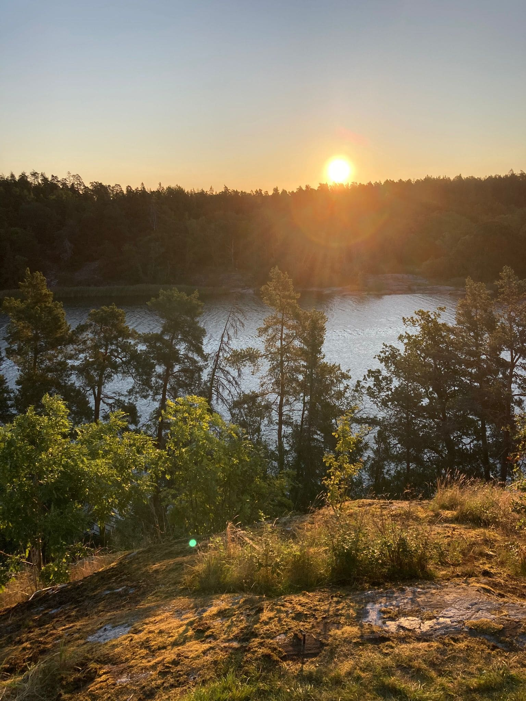
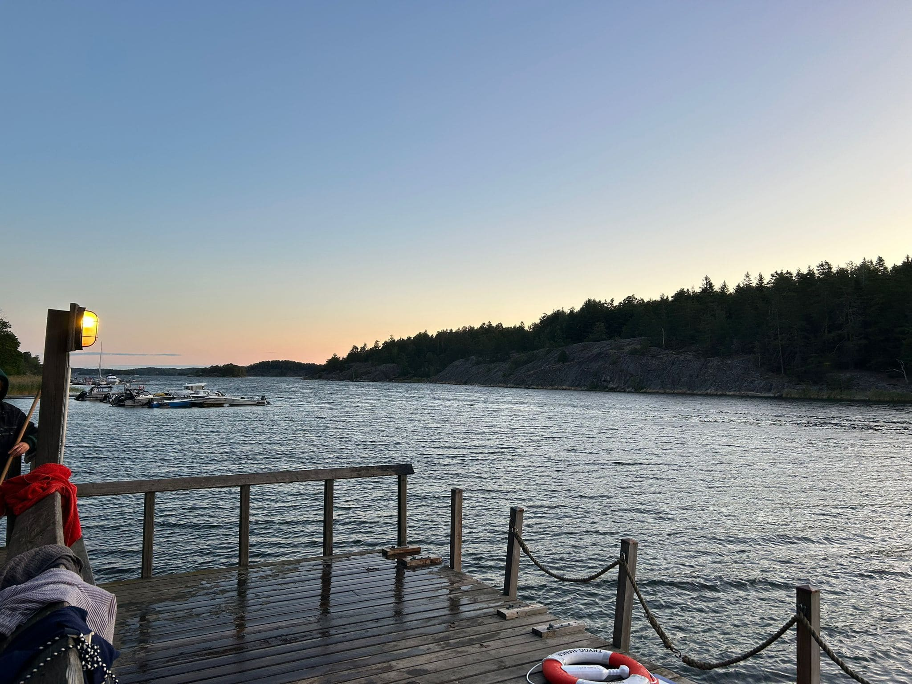
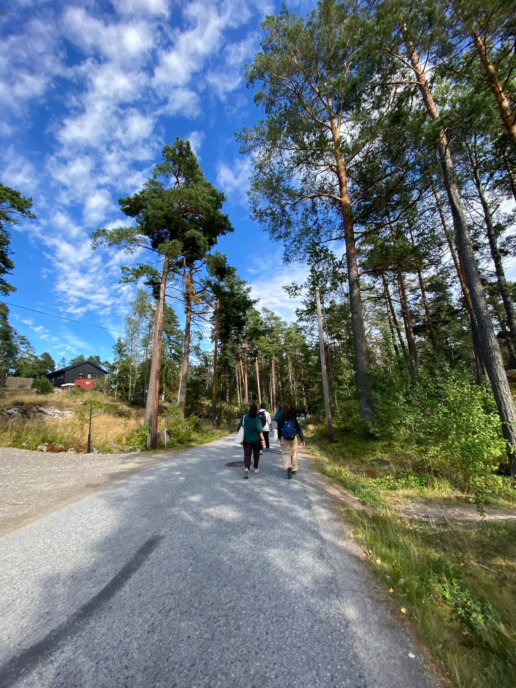
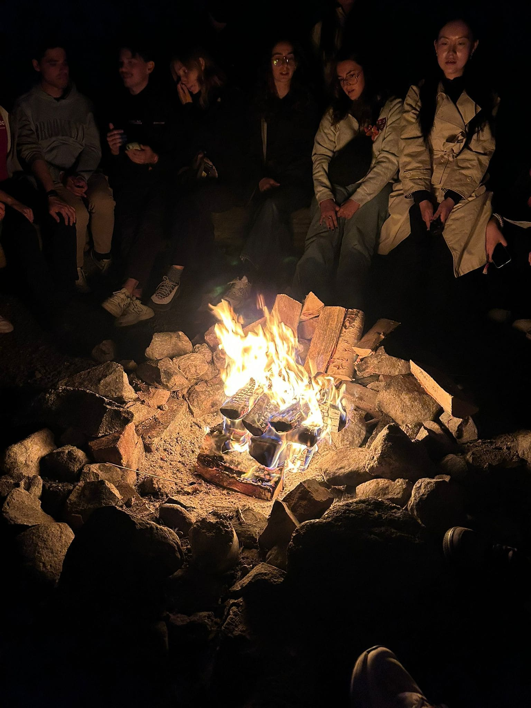
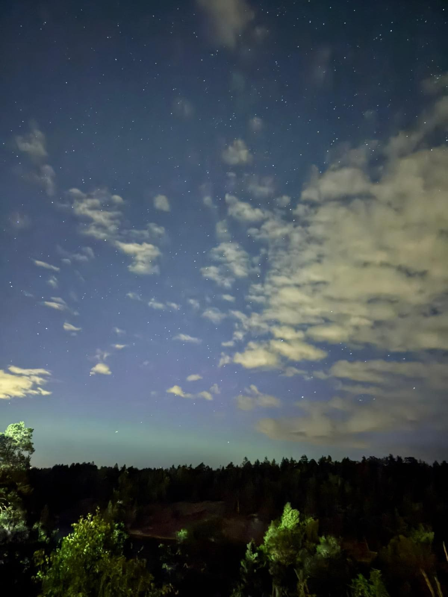
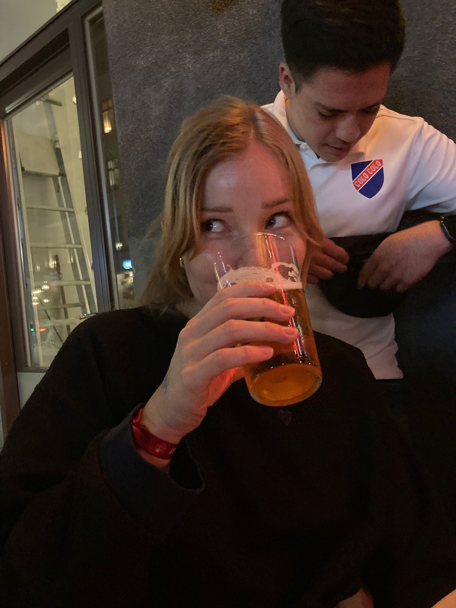
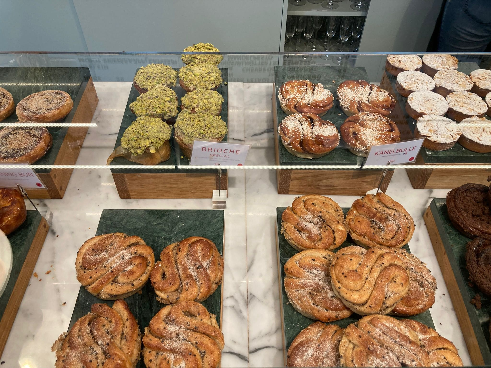
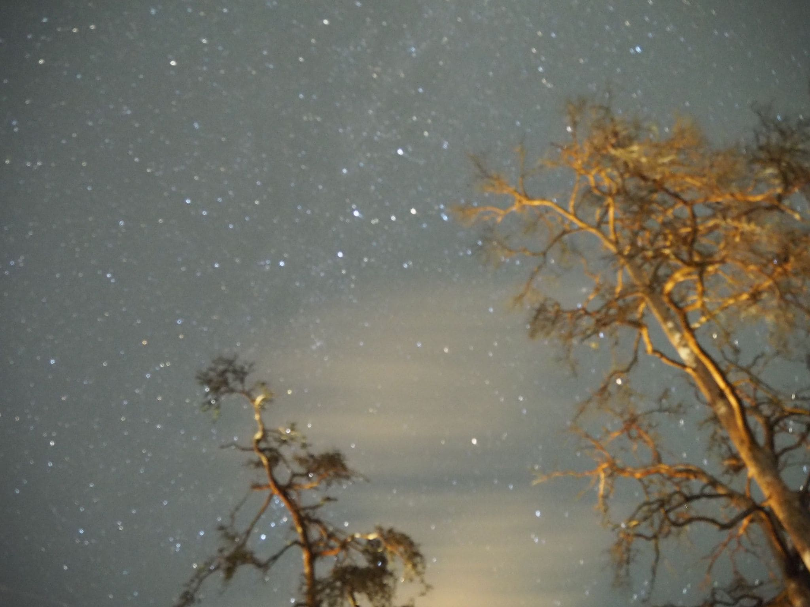
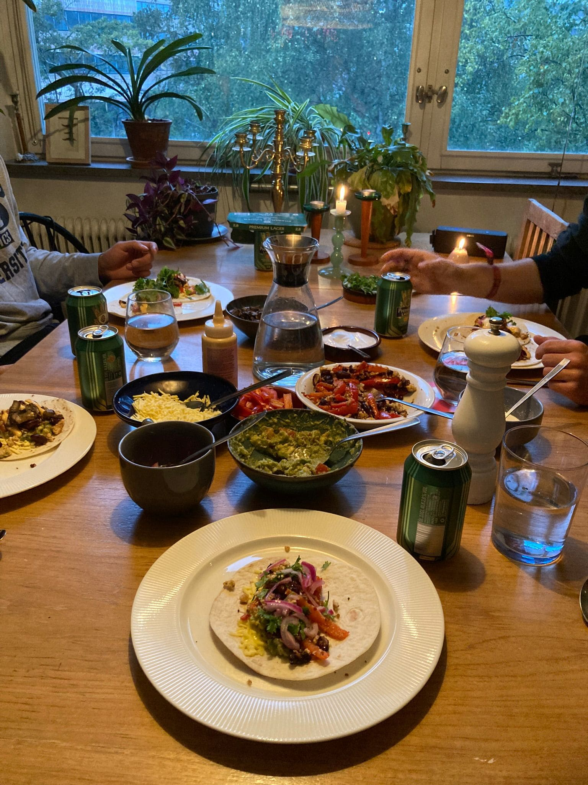

Första veckan
(++ DISCLAMER: Sorry that this is in (bad) English my brain is just wired in English right now, I will try to make this in German or both next time!)
So creating your personal blog in 2025 is probably 10 years late.. but starting a master program with 29 seems to be the same, so I had to go for it.
Also writing your personal blog feels very ego-centric.. but unfortunately sending out updates to too many people with the same content or not updating you feels no better. So please forgive me and don't inform me that I could also act my age and make an instagram story or try to act my future-classmates-to-be-age and make a tiktok-real. If this is still what they do. Need to check in with that later.
So where do I get started... I guess with accepting that at this point, that either I will either write a complete (and lengthy) novel here or incoherent highlights drizzled over with random facts. Of course I decided for the latter: - From all the times I have moved places this start easily outperformed all the other ones. By far. And hence makes it even more difficult to not develop too high expectations (something I am very good at). Things started with a small kth committee waiting at the airport to pick us up, with glossy flyers, more detailed instructions about the next steps waiting on info sheets on the bus seats and more help desks, check-in-points and snacks waiting for us at the university (you can see the state of my contentment in the picture on the homepage). Apparently I left my country to move to an even more “German” one. Well almost because everyone seemed in a good mood despite in mid of August it started to rain, the wind was blowing and I seemed to be the only one so daring to not wear long pants. - The apartment: just temporary (till 06.09. more on that later), but imagine a quite run-down, but super-cozy apartment with big windows on all three sides looking out to the contrasting futuristic hospital & university complex beaming green lights of evening sun in every room. Trying not to get used to so much comfort too quickly. - The welcome week: As my new friend Kayla summarized it: this week I am just motivated by yolo and fomo (and I do not usually use these words). I did not spend two hours refreshing the overcrowded server of the international student organization to a secure a spot in as much different events in the first weeks as possible for nothing, so in short I did as much as possible which included a treasure hunt, a ferry-hiking-sauna-dinner-bonfire-sauna-no-sleep-trip, a sustainability campus tour, an urban development hunt and a pub crawl so far. But finally, after 6 days today I had to surrender and cancel the beach trip, because I had to accept that for the first time in my life that I can remember my social batteries are completely empty. But no worries, in the meantime they recharged and so I can probably continue with the second welcome party tonight. - The studies: Okay almost forgotten, there was something to motivate me to come here in the first place. It was a master program called Sustainable Technology (for everyone who very understandably forgot its name again). I can feel you now because this university apparently offers 60 different master programs and new people keep telling me which ones they do and I keep forgetting it. The welcome event was very nice (the part that I did not miss because I finally got my first apartment viewing) and I was very soon confronted with one of my key weaknesses: wanting to immediately leave the room if a person talks very slowly and I know he will go on like this for the next two hours. But there was pizza (a.o. banana-chicken-curry-pizza .. a Swedish classic they say) and more free cinnamons buns so what do you want more, so my other key weakness (free food) saved me. In general free cinnamon buns (kanelbullar) were a very strong theme during this week so that by now I am both fed up by them and addicted to them. Back to the studies: In the first semester I cannot chose any subjects and the four I have to take all do not sound crazy exciting, BUT there are a lot of associations and clubs that you can spend time in and can do projects on the side that are sustainability related and sound very interesting, so in case I actually have some time left, I will not get bored. Well I also won't get bore because there is a Swedish (and Italian) language coffee, free sports courses, foodsharing-trips, a moving-out to organize (yes!!) and lot of free lunch lectures waiting. And because I decided to commit myself to writing a post in my personal blog once a week for some reason. - In between: this feels like a very bad summary of my actual first week, but that’s okay because a good summary would than be equally exhausting as my week has been and I do not want anybody to read that. But still here some more details that did not fit in yet, but I do not want to be accused of having kept from you: - I had a very first sauna + lake-experience, followed by a very first sauna+lake in the sunrise experience and possibly for a little moment looking at the landscape around me and not thinking about the fish below me I thought that this single moment alone might have justified the decision to move here. - I still had quite some moments (especially the first days) waking up, realizing where I am and not believing myself that this is reality, because it just seemed to absurd, to unreal. Even more strange of a feeling when I had breakfast (my classic way-too-many ingredient porridge learned with hard effort from porridge-master-Antonia) with my temporary roommate Julie (from Denmark), just as we had last weekend and it almost did not seem like I had just arrived here 6 days ago. And writing this I can look out the window on the chestnut tree and if I look a bit longer I might think I would just looking out the kitchen window in Eschweiler. - Yes the cinnamon buns are great here, now I do not think they are substantially greater than the ones from the hipster bakeries in Köln and unfortunately they almost double the price. The real problem are also all the other pastries they can lure you in and get you even more addicted with. - Word of the week: fredagsmys – it stands for a Swedish tradition of spending a Friday evening in a cozy way and I was lucky enough to spend it with three of my brand new fellow students and we had tacos (surprisingly also a typical Swedish thing) and that helped a lot missing everyone at home a little less. - Also mentionable: among all the nice people I met last week I also met Priscilla who does not only have excellent music recommendations but for obvious reasons really brought a pull-up bar from Connecticut to Sweden. No excuses. - The university parties start at 8 and end at 1. I think this country is made to go their in your end of 20s. - Aaaaah almosten forgotten one of the most relevant things: I won’t be homeless after the 6th of September!! (Not that I didn’t figure out a plan b in the meantime where I would live on the couch on some French people in exchange for cooking for them). My future roommate is Swedish, loves to cook and accepted me despite my attempt to bribe her with pastries failed completely. She is gluten-free so even if I will have to keep living without my favorite roommates I won’t have to miss cooking with some extra challenges. - Okay I will stop here. Feedback, comments and statements about how much you miss me too please on the usual channels you reach me by. Hej da, Hannah PS: Please forgive me the bad layout of everything I will work on it







